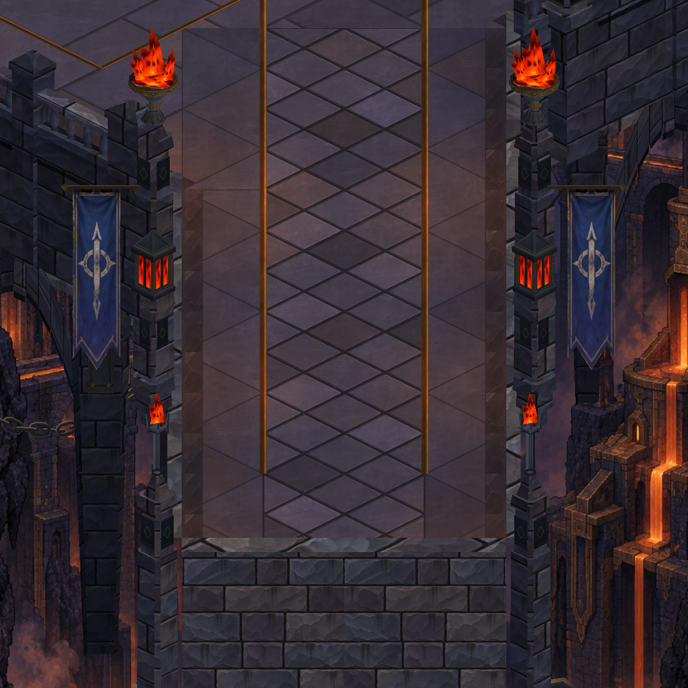
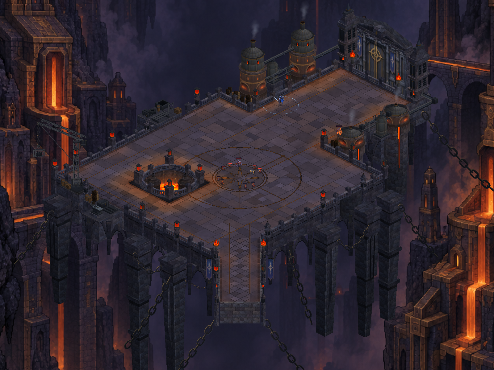

Dökümhane — köprü, kemer ve fırın
Üç paralel çalışma: köprüde oturan ayaklar ve taşıyıcı omuzlar, alt kemerlerde yüzey ayrımı, fırın kapaklarında metal kuşaklar. Yakın planda belirgin, genel görünümde ölçülü bir yapısal düzenleme. Solda önce, sağda sonra; gerçek Unity görüntüleri.
17 statik çizim grubu; 78.820 → 80.316 köşe (+%1,90). Doğrulama kaydı
bridge-detail — önce / sonra


undercroft-detail — önce / sonra
shaft-detail — önce / sonra
overview — önce / sonra


Telefonda başlangıç — önce / sonra
545 test geçti; paket yüklendi. Sabit inceleme: 59,9 FPS, GPU 3,8 ms. Kalıcı profil korundu; açık koşu onayınla yeniden başlatıldı.
Fırın çukuru — önce / sonra
Aynı iki sürükleme rotası; zamanlamadan küçük kamera farkları oluşabilir.